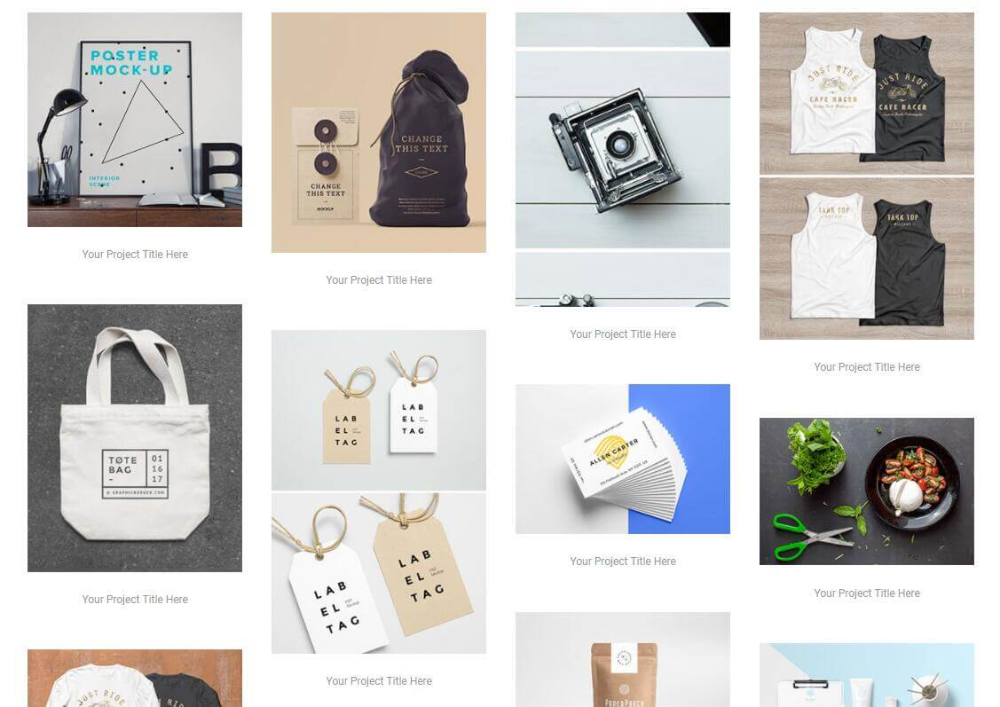

前端笔记——瀑布流布局的实现方式
什么是瀑布流布局？让我们先来看一张图片
这种布局方式能够让各种不同大小的元素在排列上更加美观，同时也节省空间。 本文只讨论css的实现方式，首先先讲一种简单的方式。
CSS3的Multi-column布局方式
这种布局方式最初是用来设置文本的多列排列，但是灵活应用也可以达到我们想要的效果。
假如我们有一个这样的结构
<div class="container">
<div class="item"><img src="QQ截图20171119143410.jpg" alt=""></div>
<div class="item"><img src="QQ截图20171119143433.jpg" alt=""></div>
<div class="item"><img src="QQ截图20171119143453.jpg" alt=""></div>
<div class="item"><img src="QQ截图20171119143512.jpg" alt=""></div>
<div class="item"><img src="QQ截图20171119143532.jpg" alt=""></div>
<div class="item"><img src="QQ截图20171119143544.jpg" alt=""></div>
<div class="item"><img src="QQ截图20171119143616.jpg" alt=""></div>
</div>
将css设置如下
img {
max-width: 200px;
}
.container {
width: 800px;
margin: 0 auto;
column-count: 4;
column-gap: 10px;
}
得到的样式如下
其中容器.container属性column-count: 4;设置列数为4列
column-gap: 10px;设置列与列之间的间距为10px
还有一个重要的属性，用在.item子元素内，column-break-inside:avoid; 表示元素内不断行，不生成新的列
更多详细属性可以参考多列（Multi-column）
display:flex;方式
同样是上面的结构，我们只需将.container的css属性设置如下
.container {
display: flex;
flex-flow: column wrap;
width: 830px;
height: 450px;
margin: 0 auto;
}
得到的布局依然是这样
这种方式需将display设为flex，Webkit内核的浏览器需加前缀-webkit-
其中flex-flow是flex-direction和flex-wrap的简写
flex-direction决定项目的排列方向，可选 row | row-reverse | column | column-reverse;
flex-wrap决定换行方式，可选nowrap | wrap | wrap-reverse;
上例选择垂直方向排列column，换行wrap
更多flex布局的属性可参考Flex 布局语法教程
与Multi-column方式不同的是，选择这种方式必须设置height的高度，height的值决定列数，对于动态生成的项目不友好